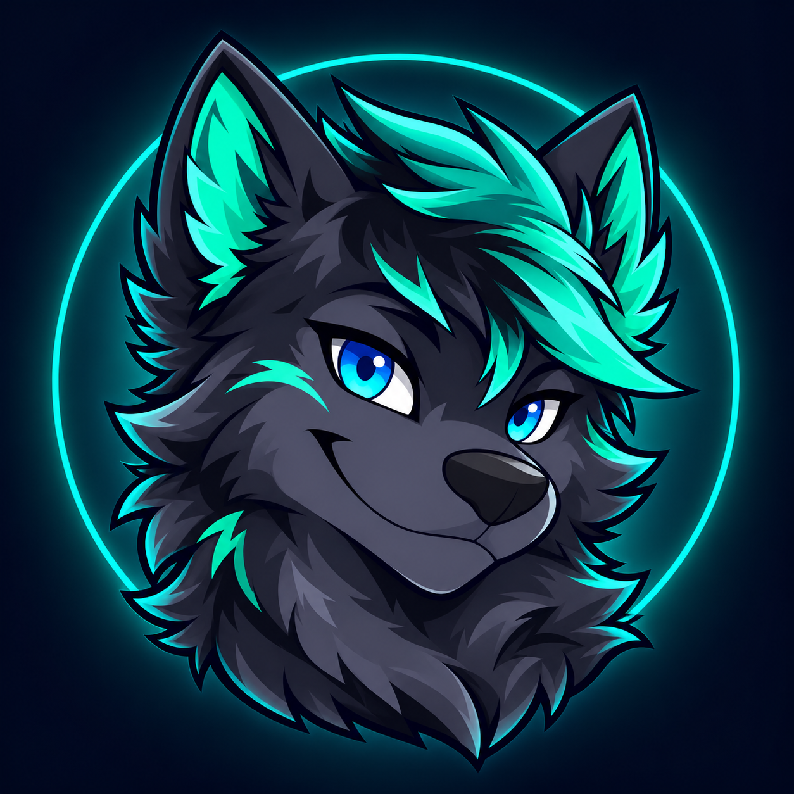

Start with a song
Search for a track or share a supported link. Add it to the queue, play it next, or skip straight to it.
Bring your community together around the songs, streams, and playlists you love. Vttea keeps the music moving, right where you hang out.
Explore commands →See music sources
Search for a track or share a supported link. Add it to the queue, play it next, or skip straight to it.
Move and shuffle tracks, adjust volume, seek through songs, and try bass or speed filters.
Choose a DJ role, a bot channel, and default playback settings for your community.
Vttea sends links to its configured Lavalink node. Availability can vary by source, region, node configuration, and the individual track.
Search for a song or paste a supported link.
See what is coming up next.
Find the rest of Vttea’s command groups.
Vttea is being prepared for launch. The invitation link will be added once the Discord application is ready.